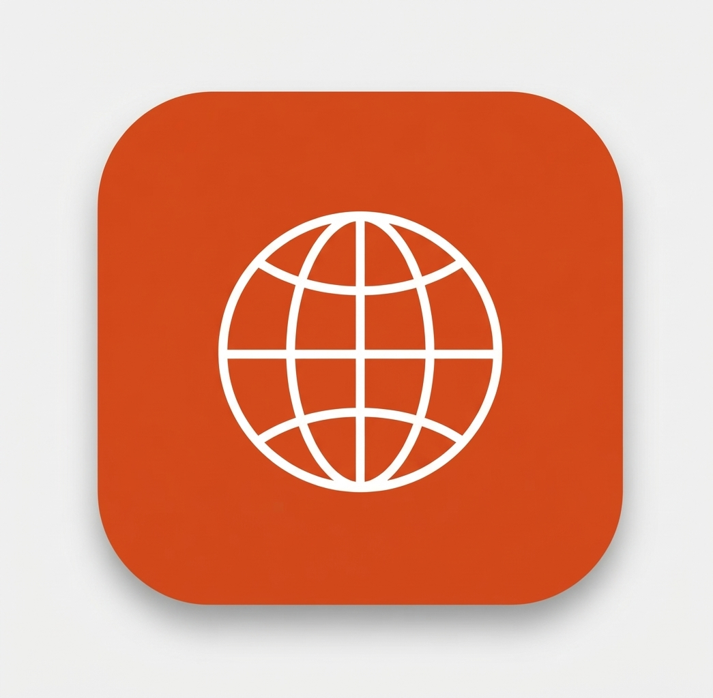
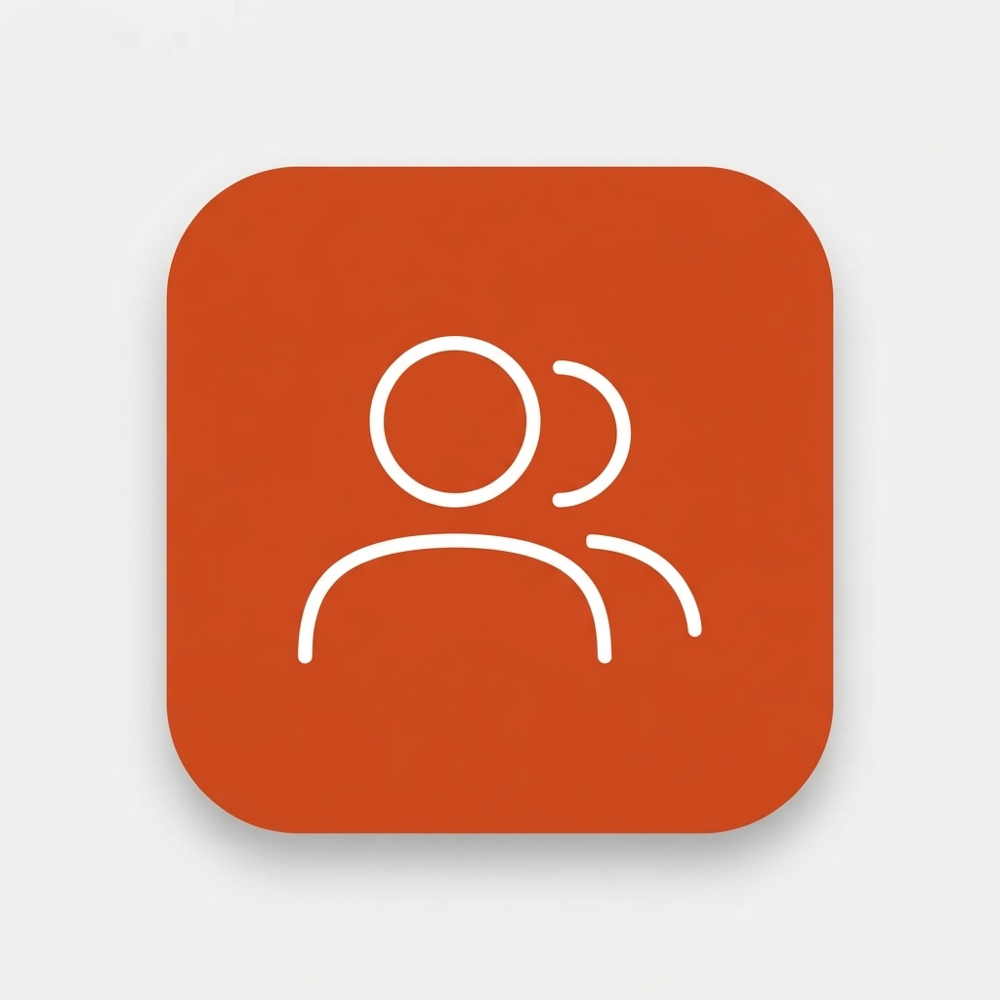
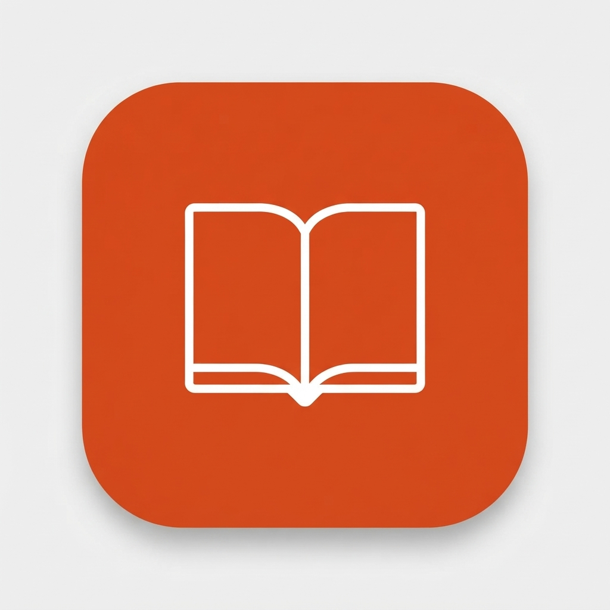

国際交流イベント
年2回の大型イベント"Connect"を中心に、毎週少人数での交流イベントも実施。ゲームやトークで留学生と一緒に盛り上がります。
- 国際交流DAY(前期・後期)
- 留学week(年2回)
- 小交流イベント(毎週)

年2回の大型イベント"Connect"を中心に、毎週少人数での交流イベントも実施。ゲームやトークで留学生と一緒に盛り上がります。

日本語学修支援、生活・相談サポート、異文化適応支援など、留学生が安心してキャンパスライフを送れるよう包括的に支援します。

英語村E3との共催イベントや外国語講座との連携を通じて、実践的な語学力の向上と多文化理解を深める機会を提供します。